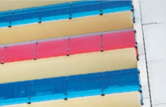

Thermocolour is available in an expansive range of colours and designer patterns limited only by the availability of the silk screen and your imagination. We can even design to your own requirements.
Thermocolour can be applied to Clear, Low Iron, Tinted, Reflective and Matlucent substrates and can also be incorporated into our toughened laminated process or FGI Klymet Control Insulated Glass Units.
FGI Thermocolour Glass Is Ideal For:
- Spandrel panels
- Internal & external cladding
- Kitchens & Bathrooms
- Glass splashbacks
- Transport/Automotive Industry
- Non slip glass flooring
- Internal office partitions
- Graphic design applications – logos and patterns
- Decorative furniture